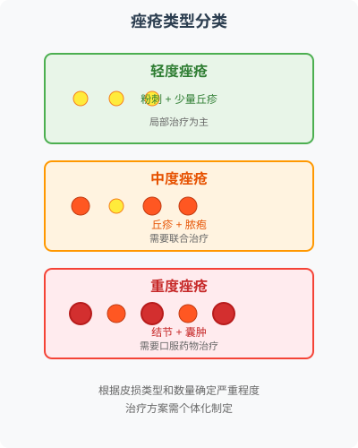
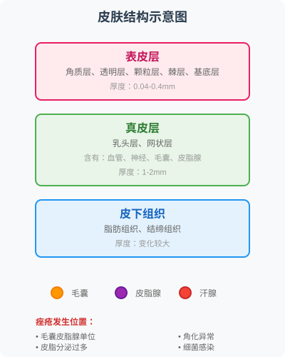

第一章 认识你的"小痘痘"——专业诊断篇¶
🎯 知己知彼，百战不殆¶
在开始任何一场"战争"之前，最重要的一步，就是全面了解你的"敌人"。它从何而来？有哪些种类？实力如何？只有做到知己知彼，我们后续的每一步行动才能精准有效，而不是盲目地"开枪"。所以，在急着寻找祛痘"神药"之前，请先和我一起，给这些赖在你脸上的"小麻烦"做一次全面的背景调查。
📊 本章导航：专业诊断的知识地图¶
| 学习模块 | 核心内容 | 学习目标 | 实用价值 |
|---|---|---|---|
| 1.1 痤疮家族识别 | 寻常痤疮 vs 玫瑰痤疮 | 准确区分两大类型 | 避免误诊误治 |
| 1.2 精准诊断方法 | 专业诊断工具与流程 | 了解医生诊断思路 | 配合专业治疗 |
| 1.3 发病机制深析 | 四大发病因素分析 | 理解病因本质 | 从根源预防 |

🔍 1.1 痤疮家族的"成员介绍"¶
🎭 两大"派系"的世纪对决¶
你可能会把脸上所有红色的、白色的、隆起的小疙瘩都统称为"痘痘"。但在我们皮肤科医生的眼里，它们其实是一个庞大的"家族"，有着不同的名字、样貌和"性格"。最常见的两大"派系"，就是**寻常痤疮（Acne Vulgaris）和**玫瑰痤疮（Rosacea）。
⚠️ 医生提醒：它们常常被混淆，但治疗思路却大相径庭，认错"敌人"，可能会让你的"战痘"之路南辕北辙。
📊 两大痤疮类型快速对比¶
| 特征 | 寻常痤疮 (青春痘) | 玫瑰痤疮 (Rosacea) |
|---|---|---|
| 核心标志 | **粉刺（黑头、白头）**是诊断的"基石" | **阵发性潮红、持续性红斑**是诊断的"灵魂" |
| 好发部位 | 面部皮脂腺丰富区域（T区、脸颊），也可发于胸背部 | 严格局限于**面中部**（脸颊、鼻子、前额、下巴），"蝴蝶"状分布 |
| 皮损形态 | 粉刺、丘疹、脓疱、结节、囊肿 | 红斑、毛细血管扩张、丘疹、脓疱。绝无粉刺 |
| 皮肤感觉 | 通常是**油腻感** | 通常是**干燥、灼热、刺痛、紧绷感** |
| 诱发因素 | 内分泌（雄激素）、饮食（高糖高乳）、压力 | 温度变化、日晒、辛辣食物、酒精、情绪波动 |
🎯 寻常痤疮：我们最熟悉的"青春痘"¶
这大概是全宇宙最有名的皮肤病了。全球约有9.4%的人口受到影响，是第八大常见的人类疾病。尽管我们叫它"青春痘"，但它绝非青春期的专利，许多三四十岁的成年人也同样深受其扰。根据统计，痤疮影响了高达85%的青少年，并且在25岁以上的人群中，女性的发病率（高达41%）远高于男性（约9%）。
🏭 它的诞生——一座皮肤"小油田"的事故现场¶

要理解寻常痤疮，我们必须先认识我们皮肤里的一个重要结构——毛囊皮脂腺单位（Pilosebaceous Unit）。你可以把它想象成一个微型的、倒置的"瓶子"，瓶身是毛囊，瓶底连接着一个或多个皮脂腺，瓶口则开放在我们的皮肤表面。
寻常痤疮的发生，就是这个微型"瓶子"里发生了一连串的事故。现代医学已经非常明确其**四大核心发病机制**：
📋 四大发病机制详解¶
| 发病机制 | 核心问题 | 临床表现 | 治疗靶点 |
|---|---|---|---|
| 皮脂分泌旺盛 | "小油田"产能过剩 | 皮肤油腻、毛孔粗大 | 控油药物、维A酸类 |
| 毛囊口角化异常 | "管道"堵塞不畅 | 粉刺形成、毛孔堵塞 | 角质溶解剂、维A酸 |
| 微生物过度繁殖 | "细菌"滋生感染 | 红肿、炎症反应 | 抗生素、抗菌剂 |
| 炎症免疫反应 | "火灾"蔓延扩散 | 疼痛、化脓、疤痕 | 抗炎药物、免疫调节 |
🔥 1. 产量过高（皮脂分泌旺盛）¶
皮脂腺就像一个微型的"石油钻井平台"，在雄激素的刺激下日夜不停地生产着油脂。正常情况下，这些油脂会顺着毛囊这个"管道"顺利排出，在皮肤表面形成一层具有保湿和保护功能的皮脂膜。
但在青春期，或体内激素水平波动时，雄激素水平升高或皮脂腺对雄激素反应过于敏感，导致皮脂腺变成了"生产疯子"，疯狂出油，让你的脸变成一个大油田。这是痤疮爆发的物质基础和"第一宗罪"。
🚫 2. 管道堵塞（毛囊口角化异常）¶
毛囊漏斗部的"角质工人"——角质形成细胞——开始消极怠工。它们过度增殖，并且在脱落时黏糊糊地粘在一起，无法正常、有序地离开。这些异常脱落的角质细胞与过多的皮脂混合在一起，形成了一个"软木塞"，把毛囊这个"管道口"给堵死了。
这就是我们所说的**微粉刺（Microcomedo）**，它是所有痤疮皮损的最初始状态，肉眼通常看不见。
🦠 3. "菌"满为患（痤疮丙酸杆菌等微生物繁殖）¶
被堵在毛囊里的皮脂和角质碎屑，成了一个完美的、缺氧的、富含营养的"细菌食堂"。一种叫做**痤疮丙酸杆菌（Cutibacterium acnes）**的皮肤常住居民，在这里找到了天堂。它们开始疯狂开派对，大量繁殖，分解皮脂产生游离脂肪酸，这些代谢产物会进一步刺激毛囊，加重炎症。
🚒 4. 引发"火灾"（炎症与免疫反应）¶
身体的"免疫警察"发现了这里的混乱局面，立刻拉响警报，派遣大量的中性粒细胞、淋巴细胞等前来镇压。这些免疫细胞释放出多种炎症因子，一场轰轰烈烈的炎症"火灾"就此爆发。这场免疫反应的强度，直接决定了痘痘的严重程度。
💡 医生洞察：这四大因素，环环相扣，最终在你脸上形成了一颗颗我们肉眼可见的、形态各异的"痘痘"。
👥 它的"家族成员"：从"小透明"到"大BOSS"¶
根据上述"事故"的严重程度和发展阶段，寻常痤疮家族的成员也分不同等级。正确辨别它们的类型，是精准用药和治疗的第一步。
📊 痤疮皮损类型全景图¶
graph TD
A[痤疮皮损] --> B[非炎性皮损]
A --> C[炎性皮损]
A --> D[重度皮损]
B --> B1[白头粉刺]
B --> B2[黑头粉刺]
C --> C1[丘疹]
C --> C2[脓疱]
D --> D1[结节]
D --> D2[囊肿]
classDef primaryNode fill:#009688,stroke:#00796b,stroke-width:2px,color:#fff
classDef secondaryNode fill:#4db6ac,stroke:#009688,stroke-width:2px,color:#fff
classDef tertiaryNode fill:#e0f2f1,stroke:#009688,stroke-width:2px,color:#00796b
class A primaryNode
class B,C,D secondaryNode
class B1,B2,C1,C2,D1,D2 tertiaryNode🤫 非炎性皮损——"闷声发大财"的初级阶段¶
这是由于毛囊口堵塞形成的，是痤疮的基础和前身。
| 类型 | 特征 | 外观 | 治疗要点 |
|---|---|---|---|
| 白头粉刺 (闭口粉刺) | 毛囊口完全堵死 | 直径1-2mm白色或肤色小丘疹 摸上去疙疙瘩瘩，不红不痛 | 角质溶解 避免挤压 |
| 黑头粉刺 (开口粉刺) | 毛囊口开放，油脂氧化 | 顶部黑色的小突起 毛孔明显可见 | 控油 温和去角质 |
⚠️ 重要提醒：黑头不是因为脏，也不是因为有灰尘，而是油脂的"生锈"现象。暴力地用鼻贴去撕扯，不仅很难根除，还容易损伤皮肤屏障。
🔥 炎性皮损——"战火"开始燃烧¶
当粉刺里的"火灾"开始蔓延，免疫系统介入后，就形成了炎性皮损。
| 类型 | 特征 | 外观 | 治疗要点 |
|---|---|---|---|
| 丘疹 | 毛囊壁破裂，内容物进入真皮 | 直径<5mm红色隆起小疙瘩 有轻微疼痛或压痛感 | 抗炎 外用药物 |
| 脓疱 | 炎症加剧，免疫细胞大量聚集 | 顶部有白色或黄色脓点 周围红肿 | 抗感染 消炎药物 |
💥 重度皮损——最可怕的"深水炸弹"¶
这是最严重的两种类型，也是最容易留下永久性疤痕的元凶。
| 类型 | 特征 | 外观 | 治疗要点 |
|---|---|---|---|
| 结节 | 炎症突破毛囊壁，深达真皮 | 直径>5mm坚实疼痛的红色肿块 位置深，无脓头 | 口服药物 强效治疗 |
| 囊肿 | 结节的"液化版"，组织破坏严重 | 大的波动感肿块 疼痛剧烈，可能融合 | 必须就医 综合治疗 |
🚨 医生警告：结节和囊肿对皮肤组织的破坏是毁灭性的，愈合后几乎百分之百会留下萎缩性（凹陷性）或增生性（凸起性）的疤痕。遇到这种情况，请立即就医！
🌹 玫瑰痤疮：那个爱"脸红"的伪装者¶
现在，我们来看看另一位重要的"嫌疑人"。在我的门诊中，至少有三分之一自认为是"顽固性痘痘"或"敏感肌"的患者，最终被诊断为玫瑰痤疮，或者两者并发。
🚨 重要提醒：玫瑰痤疮（Rosacea）是一种以面部阵发性潮红、持续性红斑和毛细血管扩张为特征的慢性炎症性皮肤病。把它和寻常痤疮搞混，然后使用强力的控油、去角质产品，结果只会越"作"越红，越治越糟。
🎭 它的特征——一张反复无常的"红脸"¶
玫瑰痤疮的核心病理生理改变，目前认为与皮肤的**天然免疫功能异常、血管神经高反应性以及微生物（如毛囊蠕形螨）的刺激**有关。你可以把它通俗地理解为面部血管和神经的"功能紊乱"，导致它们对各种刺激产生了过度反应。
📋 玫瑰痤疮的核心症状¶
| 症状类型 | 具体表现 | 重要特征 | 鉴别意义 |
|---|---|---|---|
| 阵发性潮红 | 面部突然变红、发烫 | 持续数分钟到数小时 | 最核心、最早期的表现 |
| 持续性红斑 | 面中部持久不退的红斑 | 像天然的"腮红" | 病情发展的标志 |
| 毛细血管扩张 | 皮肤表面可见红血丝 | 细微、蜿蜒的血管 | 长期血管扩张的结果 |
| 丘疹脓疱 | 类似痤疮的红肿痘痘 | 绝无粉刺 | 与寻常痤疮的关键区别 |
| 主观感觉 | 干燥、灼热、刺痛 | 对护肤品不耐受 | 患者生活质量影响大 |
💡 医生提醒：玫瑰痤疮没有粉刺（黑头、白头）！这是鉴别二者的金标准。因为玫瑰痤疮的发病机制中，没有毛囊口角化异常这一环。它的丘疹脓疱纯粹是炎症和血管反应的结果。
🔍 其他重要症状¶
赘生型改变¶
主要见于男性，鼻部的皮脂腺和结缔组织过度增生，导致鼻子变得又大又红，表面凹凸不平，形成俗称的"酒渣鼻"（Rhinophyma）。
眼部症状¶
大约一半的玫瑰痤疮患者会伴有眼部不适，如眼睛干涩、异物感、反复的睑缘炎（长"针眼"）或结膜炎。
🎯 快速自测：你是寻常痤疮还是玫瑰痤疮？¶
请你现在，像一位侦探一样，重新审视自己的皮肤：
- 我有没有粉刺？ （这是关键问题）
- 我长痘的同时，会不会无缘无故地大脸红、发烫？
- 我的皮肤是感觉油，还是感觉干、烫、刺痛？
📝 医生手记：精准诊断是成功治疗的基石。在我的门诊中，为患者明确诊断的过程，本身就是一种疗愈。很多被误诊为"顽固痘痘"多年的患者，当最终被确诊为玫瑰痤疮时，他们常常会有一种"恍然大悟"和如释重负的感觉，因为他们终于明白了为什么过去所有的"祛痘"努力都适得其反。
能回答好这几个问题，你就离真相近了一大步。当然，最终的诊断需要由专业医生来完成。在接下来的小节里，我们将继续深入，看看医生是如何运用更专业的方法，给这些"小麻烦"一个无可辩驳的"身份证明"。
🔬 1.2 精准诊断：不让痘痘"蒙混过关"¶
在家里对着镜子自查，是我们迈出的第一步，这能帮助我们建立基本的认知。但要真正给这些"小麻烦"定性、定量，最终的"判决书"，还是需要由专业的皮肤科医生来出具。医生的诊断过程，远不止"看一眼"那么简单，它更像是一场严谨的侦探工作，需要运用各种工具和逻辑，从纷繁复杂的线索中找到真相。
📋 专业诊断的四步法¶
graph LR
A[问诊] --> B[视诊与触诊]
B --> C[皮肤镜检查]
C --> D[实验室检查]
classDef primaryNode fill:#009688,stroke:#00796b,stroke-width:2px,color:#fff
classDef secondaryNode fill:#4db6ac,stroke:#009688,stroke-width:2px,color:#fff
class A,B,C,D primaryNode💬 问诊：一场信息量丰富的对话¶
一次详细的问诊，是诊断的起点，其重要性不亚于任何检查。我会像一位耐心的记者，引导你说出所有相关的"故事"：
| 问诊内容 | 关键问题 | 诊断价值 | 案例说明 |
|---|---|---|---|
| 病史 | 首次长痘时间、持续时间、规律性 | 判断病情阶段和类型 | 与月经周期相关提示激素影响 |
| 皮损细节 | 痘痘类型、数量、伴随症状 | 鉴别痤疮类型和严重程度 | 痛痒程度反映炎症活动性 |
| 诱发因素 | 加重因素、缓解因素 | 寻找触发原因和预防策略 | 特定食物诱发提示饮食相关性 |
| 治疗史 | 用药史、治疗效果、副作用 | 避免重复无效治疗 | 了解药物耐受性和敏感性 |
| 个人家族史 | 生活习惯、护肤流程、家族史 | 评估遗传和生活方式影响 | 家族史提示遗传易感性 |
🎯 医生技巧：对于疑似玫瑰痤疮的患者，我会特别询问关于潮红的情况——什么时候会脸红？脸红时是什么感觉？持续多久？这些问题对鉴别诊断至关重要。
1.2 精准诊断：不让痘痘"蒙混过关"¶
在家里对着镜子自查，是我们迈出的第一步，这能帮助我们建立基本的认知。但要真正给这些"小麻烦"定性、定量，最终的"判决书"，还是需要由专业的皮肤科医生来出具。医生的诊断过程，远不止"看一眼"那么简单，它更像是一场严谨的侦探工作，需要运用各种工具和逻辑，从纷繁复杂的线索中找到真相。
问诊：一场信息量丰富的对话
一次详细的问诊，是诊断的起点，其重要性不亚于任何检查。我会像一位耐心的记者，引导你说出所有相关的"故事"：
- 病史： 第一次长痘是什么时候？持续了多久？有没有规律性？（比如是否与月经周期相关）
- 皮损细节： 主要长什么样子的痘痘？（粉刺多还是红肿痘多？）感觉痛吗？痒吗？
- 诱发因素： 你觉得在什么情况下痘痘会加重？（熬夜？吃特定食物？压力大？）对于疑似玫瑰痤疮的患者，我会特别询问关于潮红的情况。
- 既往治疗史： 以前用过什么药膏？吃过什么药？做过什么治疗？效果如何？出现了什么副作用？这些信息可以帮助我避免重复无效的治疗，并评估你对某些药物的耐受性。
- 个人史与家族史： 你的工作性质、生活习惯、护肤流程是怎样的？父母年轻时是否也长痘？对于女性患者，月经史、婚育史也是必须了解的内容。
视诊与触诊：医生的"手眼功夫"
接下来，我会请你卸下所有妆容，在明亮、均匀的光线下，让我仔细地观察你的皮肤。
- 视诊： 我会观察你皮损的**类型、形态、数量、分布和严重程度**。我会寻找是否有粉刺（寻常痤疮的关键）、毛细血管扩张（玫瑰痤疮的线索）。我还会评估你皮肤的"底色"，是油性、干性还是混合性？是否存在敏感、泛红？是否有炎症后的色素沉着（痘印）或萎缩性/增生性瘢痕（痘坑）？
- 触诊： 我会用戴着手套的手，轻轻触摸你的皮损。触摸可以帮助我判断皮损的质地（是软是硬）、深度（是表浅的脓疱还是深在的结节）以及是否有波动感（囊肿的特征）。
皮肤镜检查：痤疮诊断的"火眼金睛"
你可能会好奇，医生有时会拿出一个像放大镜一样的东西在你脸颊上照来照去，这是在做什么？这个小仪器叫做**皮肤镜（Dermoscopy）**，是我们皮肤科医生的"火眼金睛"。它是一种非侵入性的诊断工具，可以将皮肤表面放大10-400倍，让我们能清晰地看到肉眼难以分辨的皮下结构。
在皮肤镜下，不同的疾病会呈现出特征性的"密码"：
- 一个微小的闭口粉刺，其内部淡黄色的角蛋白结构清晰可见。
- 寻常痤疮的毛囊周围，可以看到典型的、呈放射状的"晕轮样"炎症性血管改变。
- 而玫瑰痤疮的毛细血管扩张，则会呈现出 характерных (characteristic) 多边形或网格状的血管形态，与寻常痤疮的血管模式截然不同。
- 我们还能通过皮肤镜评估毛囊蠕形螨的数量，看看它是否过度繁殖。
通过解读这些微观世界的线索，我们能更准确地区分寻常痤疮和玫瑰痤疮，判断炎症的程度，评估皮脂腺的活跃状态，甚至发现一些隐藏在"痘痘"外表下的其他皮肤问题。可以说，皮肤镜的应用，让我们的诊断从"经验医学"大步迈向了"精准医学"。
实验室检查：深挖"看不见"的线索
大多数情况下，经验丰富的医生通过问诊和视诊就能做出诊断。但在某些特殊情况下，我们还需要借助实验室检查，来深挖那些"看不见"的线索，这体现了循证医学的严谨性。
- 激素水平检测： 如果你是成年女性，痘痘突然加重，或者总是集中在下巴、下颌线区域（我们称之为"U区"），并且伴有月经不调、体毛增多、脱发等情况，我通常会建议你在月经周期的第2-5天空腹抽血查一下"性激素六项"。这有助于判断是否存在高雄激素血症，比如筛查"多囊卵巢综合征（PCOS）"这个常见的"幕后黑手"。明确诊断PCOS，对后续的治疗方案（如是否需要启用抗雄激素药物）有决定性的指导意义。
- 毛囊蠕形螨检测： 很多人都听过"螨虫脸"。确实，当毛囊蠕形螨在皮肤上过度繁殖时，也可能诱发或加重痤疮或玫瑰痤疮的炎症。通过在你的皮损部位取一点皮屑，或者用玻片挤压法，放在显微镜下，我们就能知道这些小虫子是不是"超标"了，这对于玫瑰痤疮的诊断尤其有价值。
- 过敏原检测： 对于一些怀疑与接触性过敏相关的皮炎样皮损，斑贴试验可以帮助我们找到"元凶"。
- 其他检查： 对于一些极不典型的病例，比如怀疑是更罕见的细菌或真菌感染，我们可能需要做真菌涂片镜检或细菌培养。对于那些最棘手、最难以辨别的病例，我们甚至可能需要做**皮肤病理活检**，即取一小块（约米粒大小）的皮肤组织做化验，这是诊断的"金标准"，能从细胞层面给出最终的答案。
严重程度分级评估系统：你的"战况"有多激烈？
"医生，我的痘痘严重吗？"这是我最常被问到的问题。严重程度的判断，不仅关系到你的心理感受，更直接决定了我们后续治疗方案的选择。在医学上，我们有一套相对客观的评估系统。虽然你不需要记住复杂的评分标准，但了解其基本逻辑，能帮助你更好地理解医生的决策。
国际上通用的分级方法有很多，一个比较简单直观的分级是Pillsbury分级法，并经过了改良：
- Ⅰ级（轻度）： 仅有粉刺（白头和黑头），炎性皮损（丘疹和脓疱）很少，总数小于30个。
- Ⅱ级（中度）： 在粉刺的基础上，出现了中等数量的炎性丘疹和脓疱，总皮损数在30-50个之间，也可见少量结节。
- Ⅲ级（中重度）： 有大量的炎性丘疹和脓疱，总皮损数在50-100个之间，并且有较多的结节。波及范围更广，如整个面部。
- Ⅳ级（重度）： 这是最严重的类型，表现为大量的结节和囊肿，常形成聚合、融合的趋势，总皮损数超过100个，或有大量的囊肿。这种类型极易留下严重的疤痕，包括增生性瘢痕和萎缩性痘坑。
医生手记： 请理解，分级的目的不是为了给你贴上"严重"或"不严重"的标签，让你徒增焦虑，而是为了**选择最匹配、最积极的治疗策略**。这就好比消防队灭火，必须根据火情等级来调动资源：
- Ⅰ级（轻度）： 可能只需要**外用药物**和**良好的生活护理**（相当于社区微型消防站出动）。
- Ⅱ级（中度）： 通常需要**外用药联合治疗**，或考虑**口服抗生素**（相当于区域消防队出动）。
- Ⅲ级（中重度）： 口服药物联合外用药物**是标准方案，并应积极考虑**联合医美治疗（如刷酸、光疗）（相当于市级消防队多车齐发）。
- Ⅳ级（重度）： **口服异维A酸**是首选，必须采取最强有力的措施来控制炎症，预防永久性疤痕的形成（相当于启动最高级别的应急响应，出动所有精锐力量）。
在"战痘"这件事上，优柔寡断，或者"佛系"地等待自愈，往往会错失最佳治疗时机，导致"小火苗"酿成"森林大火"，留下终身遗憾。
1.3 痤疮的"幕后黑手"¶
了解了痤疮的"样貌"和"实力"，我们再来深挖一下，到底是谁在背后操控着这一切？正如前面提到的，痤疮的发病机制极其复杂，它不是单一原因导致的结果，而是一场由多方势力共同参与的"合谋"。理解这些深层原因，能帮助我们从根源上思考如何进行干预。
内分泌因素：激素的"双刃剑"
这是最核心、最上游的因素，是点燃整个"战火"的火源。
- 雄激素的"总司令"作用： 无论是男性还是女性，体内都有雄激素（如睾酮）。雄激素是刺激皮脂腺细胞增殖和分泌的"总司令"。进入青春期后，随着性腺和肾上腺的发育，体内的雄激素水平会飙升，皮脂腺这个"小油田"自然开始疯狂产油，为痤疮的爆发提供了最肥沃的"土壤"。
- 50α-还原酶的"放大器"作用： 在皮脂腺细胞内，睾酮还会被一种叫做"5α-还原酶"的物质，转化为活性强5-10倍的**二氢睾酮（DHT）**。正是这个DHT，才是刺激皮脂分泌的最强火力。有些人的皮脂腺里，这种"放大器"的活性天生就比较高，所以即便他们的血液雄激素水平正常，皮肤的出油量也可能非常惊人。
- 成年女性的"周期性烦恼"： 对于成年女性而言，体内的激素水平会随着月经周期而精妙地波动。很多女性会发现在月经前一周左右，痘痘会明显加重。这通常是因为排卵后，体内的孕激素水平升高，而孕激素一方面会抢占雌激素的受体，另一方面具有一定的雄激素活性，同时雌激素水平下降，导致雄激素的相对作用增强。这种微妙的平衡被打破，就体现在了皮肤上。
- 疾病状态下的激素失衡： 之前提到的**多囊卵巢综合征（PCOS）**，其核心病理生理改变就是持续性的无排卵和高雄激素血症，因此超过70%的PCOS患者都会有中重度的痤疮。此外，肾上腺或卵巢的某些肿瘤，也可能导致雄激素异常分泌。
遗传易感性：来自父母的"礼物"
这是一个你可能不太愿意接受，但又不得不承认的事实。长不长痘，长多严重的痘，很大程度上是由基因决定的。大量的双胞胎研究和家族调查都证实了痤疮具有很强的遗传倾向。如果你的父母在年轻时是"痘痘肌"，那么你长痘的概率和严重程度都会比其他人高得多。
基因决定了什么？ * 你的皮脂腺大小、数量和对雄激素的敏感程度。 * 你的毛囊口角质形成细胞增殖和分化的模式。 * 你的免疫系统对痤疮丙酸杆菌等刺激的反应强度（是"小题大做"还是"和平共处"）。
当然，这不代表你就只能"听天由命"。遗传只是决定了你的"出厂设置"和"起跑线"，相当于给你发了一手或好或坏的"牌"。但后天的科学管理和积极治疗，相当于出牌的"技巧"，依然可以极大地改变最终的"赛果"。
环境与生活方式的影响：压垮骆驼的最后一根稻草
如果说遗传和激素是已经装填好的"弹药"，那么不健康的生活方式，就是扣动"扳机"的那根手指。它们通过影响我们的内分泌、免疫和代谢系统，直接或间接地参与了痤疮的发生发展。
- 饮食： 这是近年来研究的热点。高糖、高乳制品饮食已经被越来越多的高质量研究证实是痤疮的重要"帮凶"。它们会通过一系列复杂的生化反应，刺激胰岛素和胰岛素样生长因子-1（IGF-1）的分泌，最终促进皮脂腺分泌更多的油脂，并加重炎症。我们将在第七章详细展开。
- 作息与睡眠： 熬夜、不规律的作息会严重扰乱你的内分泌和免疫系统，导致皮质醇（一种压力激素）水平升高，从而加重痤疮。皮肤的细胞修复和再生主要在夜间黄金睡眠时间进行，剥夺睡眠，就是剥夺了皮肤自我疗愈的机会。
- 不当护肤： 过度清洁会破坏皮肤屏障，让皮肤变得敏感；使用过于油腻、封闭性强的护肤品或化妆品，则可能堵塞毛孔，导致"化妆品痤疮"；不注意防晒则会加重炎症和色素沉着。
- 机械性摩擦： 长期戴过紧的帽子、口罩，或者习惯性用手托腮，都可能因为局部摩擦、压力和封闭，导致特定部位的痘痘加重，我们称之为"机械性痤疮"。
心理压力：看不见的双向箭头
这是一个非常值得我们关注，但又常常被忽视的因素。压力本身，就可以直接导致或加重痤疮。
当我们长期处于学习、工作或生活的巨大压力下时，我们的"下丘脑-垂体-肾上腺轴（HPA轴）"会被激活，身体会释放出大量的**皮质醇**和**肾上腺来源的雄激素**。同时，皮肤的神经末梢也会释放出一种叫做**P物质（Substance P）**的神经肽。这些物质，会像一群"煽风点火"的坏家伙，直接刺激皮脂腺产油，并招来更多的炎症细胞，加重炎症反应。
而反过来，满脸的痘痘又会给我们带来巨大的心理压力、引发焦虑、抑郁和自卑，形成一个可怕的恶性循环：压力 → 长痘 → 更大的压力 → 痘痘更严重。
打破这个循环，不仅需要治疗皮肤，更需要疗愈我们的心灵。这，也正是我们下一章将要深入探讨的主题。
本章总结
🎯 本章总结：专业诊断的知识体系¶
在这一章里，我们像侦探一样，为"小痘痘"建立了一份详尽的档案。现在让我们用系统的视角来回顾这些核心知识：
📊 第一章核心知识点回顾¶
| 学习模块 | 掌握技能 | 实际应用 | 诊断价值 |
|---|---|---|---|
| 痤疮类型识别 | 区分寻常痤疮和玫瑰痤疮 | 自我初步判断 | 避免误诊误治 |
| 皮损类型辨别 | 识别从粉刺到囊肿的各种皮损 | 评估严重程度 | 指导治疗方案选择 |
| 专业诊断流程 | 了解问诊、视诊、皮肤镜检查 | 配合医生诊断 | 提高诊断准确性 |
| 发病机制理解 | 认识四大发病因素 | 从根源预防 | 制定综合治疗策略 |
🔑 关键鉴别要点¶
寻常痤疮 vs 玫瑰痤疮的核心区别¶
- 金标准：有无粉刺（黑头、白头）
- 分布特点：寻常痤疮可发于胸背部，玫瑰痤疮仅限于面中部
- 主观感觉：寻常痤疮多油腻，玫瑰痤疮多干燥灼热
严重程度分级与治疗策略¶
- 轻度（Ⅰ级）：外用药物 + 生活护理
- 中度（Ⅱ级）：外用药物联合治疗，考虑口服抗生素
- 中重度（Ⅲ级）：口服药物联合外用药物，考虑医美治疗
- 重度（Ⅳ级）：口服异维A酸，最强效治疗
💡 医者心语：放下自责，科学应对¶
理解了这一切，你或许可以放下一些不必要的自责和愧疚——长痘，不是因为你"脏"，也不是因为你做错了某一件事。它是一场由多方因素共同导演的"大戏"。
🎭 四大"幕后黑手"¶
- 内分泌因素：激素水平的波动
- 遗传易感性：基因决定的"出厂设置"
- 生活方式：饮食、作息、护肤习惯
- 心理压力：压力与痤疮的双向恶性循环
🎯 我们的应对策略¶
我们的任务，不是去改变那些我们无法改变的（比如基因），而是通过科学的医疗手段和智慧的生活管理，去精准地干预那些我们可以控制的环节，从而最大程度地掌控我们皮肤的命运。
🚀 下一步：走向内心疗愈¶
完成了这至关重要的"知己"一步，现在，让我们带着这份清醒的认知，走进我们的内心世界，去面对并疗愈那些"隐形的伤痕"。
📝 预告：在第二章中，我们将深入探讨痤疮对心理健康的影响，以及如何建立积极的心态来应对这场"肌肤之战"。